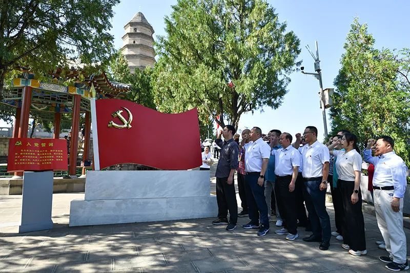
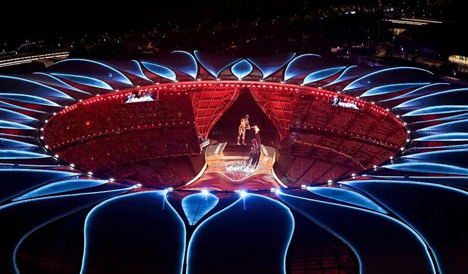

文化兴则国运兴，文化强则民族强。党的十八大以来，习近平总书记高度重视宣传思想文化工作，亲自谋划、亲自指导、亲自推动，就加强和改进宣传思想文化工作发表一系列重要讲话、作出一系列重要指示，提出一系列新思想新观点新论断。这些观点、论断，科学回答了文化层面的中国之问、世界之问、人民之问、时代之问，闪耀着马克思主义的真理光芒，构成了习近平新时代中国特色社会主义思想的文化篇，形成了习近平文化思想。
习近平文化思想是一个系统、严谨、开放的理论体系，其论述主体为“宣传思想文化工作”，涵盖理论武装、新闻出版、广播电视、文化文艺、哲学社会科学、对外宣传、思想道德建设、思想政治工作、精神文明创建、人才队伍建设等方面。习近平文化思想的形成，在党的宣传思想文化事业发展史上具有里程碑意义，为我们做好新时代新征程宣传思想文化工作、担负起新的文化使命提供了强大思想武器和科学行动指南。学习贯彻习近平文化思想，必须深入理解其蕴含的科学道理、厚实学理和深刻哲理，做到深学深悟、笃信笃行。
明体达用、体用贯通的科学道理
任何一种科学理论的产生都有着深刻的时代背景。习近平文化思想科学回答了在新时代如何把握宣传思想文化工作、怎样做好宣传思想文化工作的重大问题，内涵丰富、论述深刻，开辟了宣传思想文化工作理论和实践的新境界。正如2023年10月召开的全国宣传思想文化工作会议所概括的，“习近平文化思想既有文化理论观点上的创新和突破，又有文化工作布局上的部署要求，明体达用、体用贯通，明确了新时代文化建设的路线图和任务书，标志着我们党对中国特色社会主义文化建设规律的认识达到了新高度，表明我们党的历史自信、文化自信达到了新高度，并在我国社会主义文化建设中展现出了强大伟力”。
这些“明体达用、体用贯通”的内容，集中体现为习近平总书记在2018年8月召开的全国宣传思想工作会议上提出的“九个坚持”、在2023年6月文化传承发展座谈会上提出的“十四个强调”和2023年10月对宣传思想文化工作作出的“七个着力”批示要求等。“九个坚持”“十四个强调”“七个着力”的重要论述，聚焦新时代宣传思想文化工作的方向性、根本性、全局性问题，举旗导向、谋篇布局，既注重顶层设计，又注重战略指引，在“明体”中“达用”，在“达用”中“明体”，是“治道”和“治事”的统一，构成了习近平文化思想的主要内容。具体来说，重点阐明了八个方面的道理：
▲2023年6月30日，在延安宝塔山参观的党员干部重温入党誓词。新华社记者 张博文 摄
（一）关于文化建设的根本保证
办好中国的事，关键在党。党的领导是做好宣传思想文化工作的根本保证。离开了党的领导，社会主义文化建设就难以有效推进，社会主义文化强国就建不起来。中国共产党历来高度重视运用文化引领前进方向、凝聚奋斗力量，团结带领全国各族人民不断以思想文化新觉醒、理论创造新成果、文化建设新成就推动党和人民的事业向前发展。坚持党的文化领导权，是习近平总书记深刻总结党的历史经验、洞察时代发展大势提出来的一条重要规律性认识，体现了对党的意识形态工作的科学把握。
围绕坚持党的文化领导权这一事关党和国家前途命运的大事，习近平总书记作出了一系列重要论述，强调坚持和加强党对宣传思想文化工作的全面领导，旗帜鲜明坚持党管宣传、党管意识形态、党管媒体，坚持党管互联网，坚持政治家办报、办刊、办台、办新闻网站，让党的旗帜在宣传思想战线高高飘扬；强调牢牢掌握意识形态工作领导权，建设具有强大凝聚力和引领力的社会主义意识形态；强调做好宣传思想文化工作必须全党动手，各级党委要负起政治责任和领导责任，加强对重大问题的分析研判和重大战略性任务的统筹指导，不断提高领导宣传思想文化工作的能力和水平。
这些重要论述，深刻阐明了加强党对宣传思想文化工作领导的极端重要性，明确了做好宣传思想文化工作必须坚持的政治保证。党的十八大以来，宣传思想文化工作之所以取得历史性成就，最根本就在于有习近平总书记领航掌舵，有习近平新时代中国特色社会主义思想科学指引。把党的领导贯穿工作各方面、全过程，是推动宣传思想文化工作不断向前发展的一条重要经验。
（二）关于文化建设的地位作用
文化关乎国本、国运。党的十八大以来，以习近平同志为核心的党中央立足坚持和发展中国特色社会主义，围绕实现“两个一百年”奋斗目标、实现中华民族伟大复兴的中国梦，把文化建设纳入“五位一体”总体布局，把物质文明和精神文明相协调的现代化作为中国式现代化的“五个特色”之一，把建成文化强国明确为社会主义现代化强国建设的一个重要目标，把文化自信和道路自信、理论自信、制度自信并列为中国特色社会主义“四个自信”并指出其是更基础、更广泛、更深厚的自信，激发了全民族文化创新创造活力。
站在思想演进最高处，立足实践奔涌最前沿。在推动文化繁荣兴盛的生动实践中，习近平总书记以坚定深沉的文化自信、清醒勇毅的历史自觉、高瞻远瞩的战略眼光，深刻阐明文化对于提振民族精神、增强国家认同、促进经济社会发展和人的全面发展等方面的重要作用，指出“宣传思想文化工作事关党的前途命运，事关国家长治久安，事关民族凝聚力和向心力，是一项极端重要的工作。”“无论哪一个国家、哪一个民族，如果不珍惜自己的思想文化，丢掉了思想文化这个灵魂，这个国家、这个民族是立不起来的。”强调“当高楼大厦在我国大地上遍地林立时，中华民族精神的大厦也应该巍然耸立。”“在集中精力进行经济建设的同时，一刻也不能放松和削弱意识形态工作。”“只有物质文明建设和精神文明建设都搞好，国家物质力量和精神力量都增强，全国各族人民物质生活和精神生活都改善，中国特色社会主义事业才能顺利向前推进。”
这些具有针对性的布局、举措和富有创见的观点、论断，彰显了文化建设的根本性、战略性、全局性意义，把对宣传思想文化工作的地位和作用的认识提升到了一个前所未有的高度，在全党全国凝聚起了充盈的文化自信、文化自强、文化自觉，推动形成了抓文化、育文化、兴文化、强文化的高度共识。
（三）关于文化建设的目标任务
马克思指出：“人的本质并不是单个人所固有的抽象物。在其现实性上，它是一切社会关系的总和。”而宣传思想文化工作是在人的头脑里搞建设，从来都同国际国内形势密切相关，同党和国家事业发展紧密相连。一切都在变化，唯有变化不变。新时代以来，伴随世情国情党情的深刻变化，以及舆论生态、媒体格局、传播方式的深刻变革，宣传思想文化工作的社会条件已大不一样，面临着许多新挑战新考验，其目标任务也有了新变化新内涵，呈现出许多新的特点。
着眼中华民族伟大复兴的战略全局和世界百年未有之大变局，着眼满足人民日益增长的美好文化生活需要，习近平总书记从不同维度对新时代宣传思想文化工作的目标任务进行了阐释和强调，指出：首要政治任务是用党的创新理论武装全党、教育人民，即坚持不懈用习近平新时代中国特色社会主义思想凝心铸魂，更好地统一思想、统一意志、统一行动；根本任务是“两个巩固”，即巩固马克思主义在意识形态领域的指导地位，巩固全党全国人民团结奋斗的共同思想基础；使命任务是举旗帜、聚民心、育新人、兴文化、展形象，促进全体人民在理想信念、价值理念、道德观念上紧紧团结在一起，为服务党和国家事业全局作出更大贡献。同时鲜明指出，在新的起点上继续推动文化繁荣、建设文化强国、建设中华民族现代文明，是我们在新时代新的文化使命。
这些重要论述，着眼党和国家事业发展全局，呼应人民群众关切，立足中国特色社会主义文化发展道路，凝练概括了新时代宣传思想文化工作的目标任务，既各有侧重、有所区分，又相互贯通、浑然一体，构成了新时代社会主义文化建设的目标体系，是不断引领工作创新发展的方向指引。
▲2023年9月23日，最后一棒火炬手汪顺和数字火炬手在杭州亚运会开幕式上点燃主火炬。新华社记者 程婷婷 摄
（四）关于文化建设的基本职责
为中心任务助力、为全局工作添彩，是宣传思想文化工作体现价值的关键所在。如果游离中心工作，宣传思想文化工作就会陷入“自娱自乐”的窘况，成为无源之水、无本之木。只有牵住服从和服务大局这个“牛鼻子”，宣传思想文化工作才能保持旺盛生命力。对此，习近平总书记强调，一定要把“围绕中心、服务大局”作为宣传思想文化工作的基本职责，做到“胸怀大局、把握大势、着眼大事，找准工作切入点和着力点，做到因势而谋、应势而动、顺势而为。”
围绕履行好这一基本职责，习近平总书记又分别对宣传思想文化领域各项工作应重点担负的责任进行了阐述。如，强调理论工作要“坚持问题导向，坚持以我们正在做的事情为中心，聆听时代声音”，“廓清困扰和束缚实践发展的思想迷雾”；强调新闻舆论工作的职责和使命是“高举旗帜、引领导向，围绕中心、服务大局，团结人民、鼓舞士气，成风化人、凝心聚力，澄清谬误、明辨是非，联接中外、沟通世界”；强调文艺工作要“坚持为人民服务、为社会主义服务这个根本方向”，“广大文艺工作者要把握时代脉搏，承担时代使命，聆听时代声音，勇于回答时代课题”；强调坚持和发展中国特色社会主义迫切需要哲学社会科学更好发挥作用，“一切有理想、有抱负的哲学社会科学工作者都应该立时代之潮头、通古今之变化、发思想之先声，积极为党和人民述学立论、建言献策，担负起历史赋予的光荣使命”；强调提高用网治网水平，“使互联网这个最大变量变成事业发展的最大增量”，“要以信息化推进国家治理体系和治理能力现代化”，等等。
不谋全局者，不足谋一域。“围绕中心、服务大局”这一基本职责标示了宣传思想文化工作的职能定位和时代主题，指明了文化建设的切入点和着力点，竖起了检验工作成效的“度量衡”，成为知责、履责、尽责的根本标准。